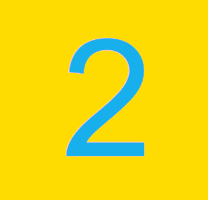
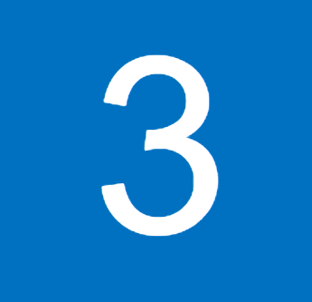
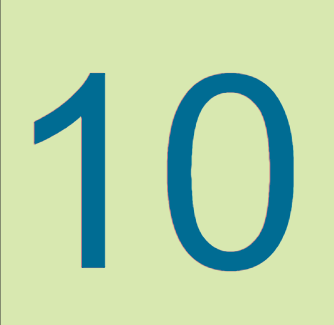
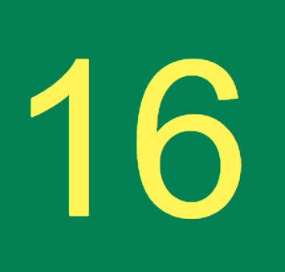
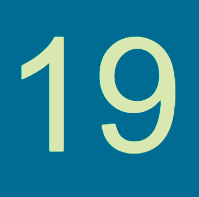
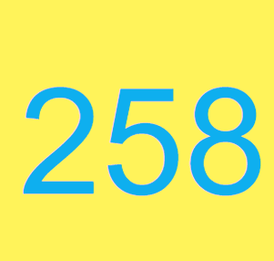
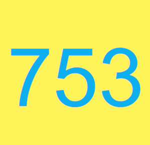

Telefonbokning
Ring oss på 031-698548 för att boka bord så löser vi detta tillsammans med
er!
Det går inte att boka bord på fredagar och lördagar.
Bokning via mejl
Självklart kan du även boka bord via våran mejl, det är för tillfället det
enklaste sättet.
Mejla oss här!
Bokning via post -
nyhet!
Nu kan du även boka ditt bord med hjälp av våran postfunktion! Du kan posta
en förfrågan till vår adress, som står längst ner i hörnet.
Vi kommer enbart svara på seriösa
brev.
Närmaste hållplats är Vasaplatsen. Gå senare upp på Aschebergsgatan ca 300 meter och
sedan hittar du oss till vänster. Dessa linjer kan du välja mellan:







Klicka på vilken linje som helst för att komma till Västtrafiks reseplanerare!
Öppetider för restaurangen
Vardagar: 11:00-22:30
Lördagar: 12:00-22:30
Söndagar: 12:00-22:00
Ingen alkoholservering efter kl 22:00 pga
nya restriktioner från Folkhälsomyndigheten.
Restaurang Marinadbark AB
Vasa Kyrkogata 1
411 27 Göteborg